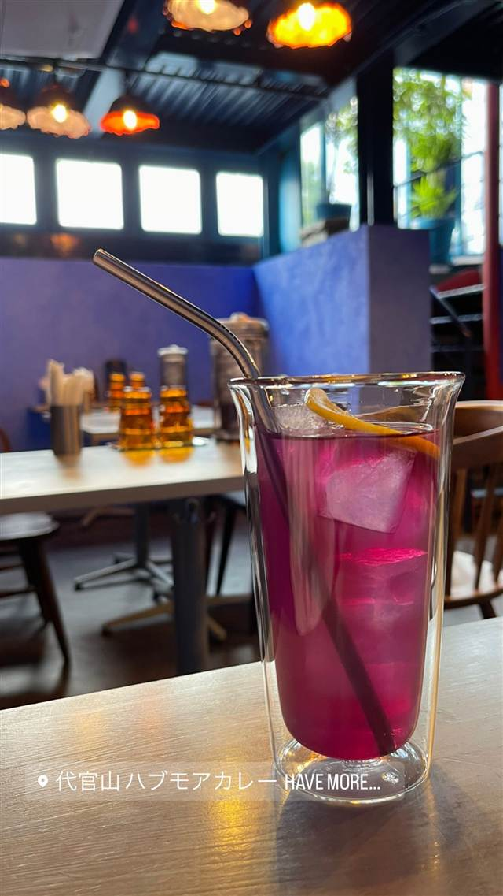
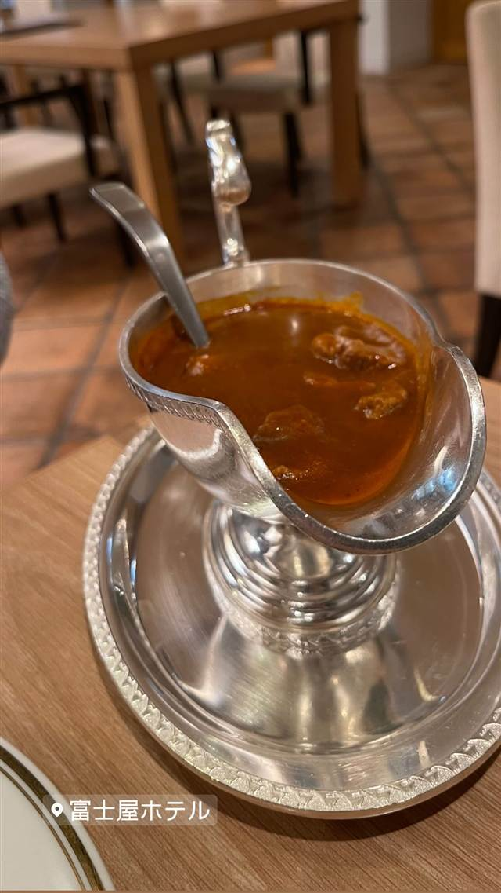

スマトラカレー 共栄堂
小麦粉不使用、スパイスだけでとろみを出す大正生まれのカレー
スマトラカレー共栄堂
WHY GO
1924年創業、小麦粉不使用で元祖スマトラカレーを今に伝える店
1924年（大正13年）創業、神保町で最も歴史あるカレー店のひとつ。スマトラ島のカレーを日本人向けにアレンジした「スマトラカレー」が名物で、ミシュランガイドのビブグルマンにも選ばれ続けている。
TRIVIA
豆知識
- 10月〜4月の期間限定デザート「焼きりんご」も創業当初からの名物。
- とろみは小麦粉ではなくスパイスだけで出している。
REVIEWS
世間の評判
3.72食べログ
漆黒ルーの独特な苦みとコク
- 黒く濃厚なルーに感じる独特な苦みと深いコクを評価する声が多い
- 注文からわずか数十秒で出てくる提供の速さとスタッフの動きの良さを評価する声が多い
- ポークカレーは千円台で具沢山なうえ値段の割に満足できるという声が多い
- 相席や満席になりやすくランチタイムは混雑しやすいという声がある
食べログ 口コミ3638件
| 創業 | 1924年（大正13年）創業 |
|---|---|
| 系譜 | 創業にあたり、東南アジアに渡り知見を得た伊藤友次郎氏の教えを受け、スマトラ島のカレーを日本人向けにアレンジしたのが始まりとされる。 |
| 看板 | スマトラカレー（タンカレーなど） |
| こだわり | 小麦粉を一切使わず、20数種類の香辛料を1時間ほどかけてじっくり炒めて作る濃褐色のルーが特徴。 |
| 掲載・評価 | ミシュランガイド東京でビブグルマンに7年連続選出。 |
| どこから | 都心 |
| 行くなら | 行列 |
| 予算 | 昼 ¥1,000～¥1,999 夜 ¥1,000～¥1,999 |
| 場所 | 神保町駅 東京都千代田区神田神保町1-6 神保町サンビルB1F |
| メモ | 行列必至で相席になることも多い、神保町でも屈指の老舗カレー店。 |
食べたもの：カレーライス
NEARBY
近い店・同じ系統の店
-
 ★
二郎系(直系) 神保町
ラーメン二郎 神田神保町店
三田本店直系の乳化系濃厚豚骨醤油が自慢の二郎ラーメン
昼 ¥1,000～¥1,999
★
二郎系(直系) 神保町
ラーメン二郎 神田神保町店
三田本店直系の乳化系濃厚豚骨醤油が自慢の二郎ラーメン
昼 ¥1,000～¥1,999
-
 ★
つけ麺 神保町駅
つけそば 神田勝本
銀座の一つ星フレンチシェフが手がける清湯つけそば
昼 ～¥999
★
つけ麺 神保町駅
つけそば 神田勝本
銀座の一つ星フレンチシェフが手がける清湯つけそば
昼 ～¥999
-
 欧風カレー 神保町駅
ガヴィアル
継ぎ足す秘伝ソースに28種のスパイス、百名店の欧風カレー
昼 ¥1,000～¥1,999 夜 ¥1,000～¥1,999
欧風カレー 神保町駅
ガヴィアル
継ぎ足す秘伝ソースに28種のスパイス、百名店の欧風カレー
昼 ¥1,000～¥1,999 夜 ¥1,000～¥1,999
-

カレー 代官山 代官山 ハブモアカレー（HAVE MORE CURRY） 草枕で修業した店主が磨く野菜とスパイスのカレー 昼 ¥1,000～¥1,999 夜 ¥1,000～¥1,999 -
 カレー 新百合ヶ丘
Curry&herb Cherry blossom（カレー＆ハーブ チェリーブロッサム）新百合丘店
動物油を使わず36種以上のハーブで仕立てた無油カレー
昼 ¥1,000～¥1,999 夜 ¥2,000～¥2,999
カレー 新百合ヶ丘
Curry&herb Cherry blossom（カレー＆ハーブ チェリーブロッサム）新百合丘店
動物油を使わず36種以上のハーブで仕立てた無油カレー
昼 ¥1,000～¥1,999 夜 ¥2,000～¥2,999
-

カレー 宮ノ下駅 富士屋ホテル 大正4年の現存最古カレーメニューから続く伝統のビーフカレーを出す宿 昼 ¥8,000～¥9,999 夜 ¥15,000～¥19,999